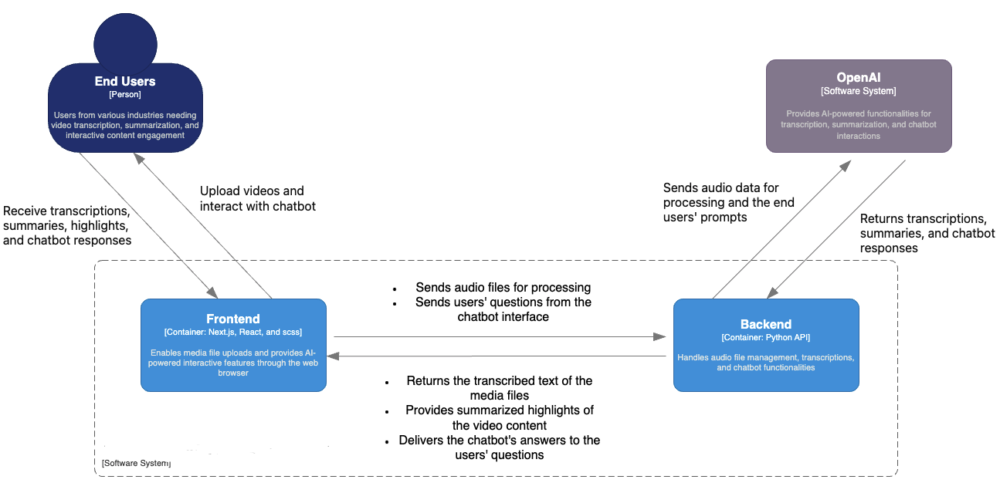

Video Highlights Generator
Video-To-Text Solution
This collaborative initiative has paved the way for innovative and scalable video content interactions in the AI era.
Overview
This project sets new standards for engaging with video content. This innovative tool leverages the synergy of AI and user-centric design to transform passive video viewing into an active, insightful conversation.
Traditional video platforms offer a passive viewing experience, limiting the viewer's engagement to comments or external searches. Highlight & Ask transforms this narrative by directly enabling users to interact with content through questions and highlights, changing the viewing experience from merely watching videos to actively engaging with them.

Key Features
- Transcribes the video's audio.
- Summarizes the transcriptions.
- Delivers highlights of the video content.
- Enables users to ask questions about the video content through a chatbot.
Tech Stack
- React (frontend)
- Python (backend)
- OpenAI's Whisper for speech-to-text transcriptions.
- ChatGPT for interactive responses.
Impact
This system streamlined decision-making by eliminating the dependency on technical staff for data queries. It also demonstrated the synergy between LLMs and classic databases in production environments.